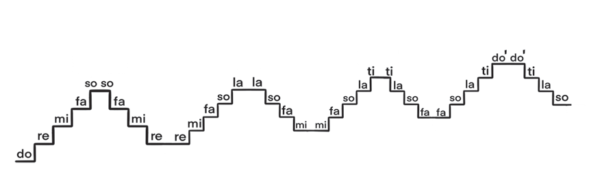

Activity 3
- (a)
Using various online sources, explore different videos or audio that demonstrate solfa singing, then sing the major scale ascending and descending.
- (b)
Sing the major scale by ascending five notes and descending four notes; continue this pattern until you reach the upper do'.

Activity 4
Sing the following solfa:
(a)